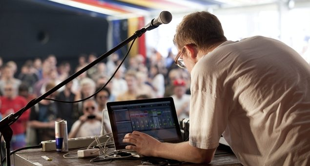

Sónar Festival daily report #1: Sónar by Day, Richie Hawtin, Steve Bug


The first day of Sónar Festival action kicked off in Barcelona on Thursday, with the early ‘Sónar by Day’ activities taking place in the open-air confines in the center of the Raval area, part of Barcelona’s Old Town. Situated across the grounds of Centre de Cultura Contemporánia and the Museu d’Art Contemporani, Thursday makes for a chilled start for the three days of festival, before the blockbuster ‘Sónar by Night’ aspect kicks off alongside it on Friday.
‘Sónar by Day’ allowed visitors to soak in the afternoon sun and enjoy a bevvy of undiscovered sounds, amongst a handful of celebrated experimental performers, across the three stages: US bass maestro Flying Lotus was hosted among a selection of live-focused acts on the SonarVillage mainstage; Ninja Tune audio/visual specialist Daedelus showed off his spectacular mirrorball-heavy Archimedes show at the SonarHall, while the tougher end of the underground club spectrum was showcased at the Red Bull Music Academy. Check out a selection of the photos below.
Seeing as ‘Sónar by Night’ doesn’t launch until the Friday evening, it made for the perfect opportunity to get out and sample some of the ‘Off Sónar’ excellence blowing up around the city. Some of the choice opportunities amongst all the gold included Richie Hawtin performing a surprise set in the open square next to the Boqueria Market, just a stones throw from the famous La Rambla area, which attracted a heaving cast of thousands for an impromptu street party. Open-air techno at dusk, amongst the bubbling street energy, made for a treat indeed.
The next choice for the evening was the drool-inducing Poker Flat vs 2020 Vision party that went down in the spectacular surrounds of the Boo Beach Club, with the entrance situated right on the sand of the city’s gorgeous Nova Mar Bella beach, which opens out onto a vast open-air terrace that stretches right into the water.
Early arrivals were greeted with the sounds of Vincenzo performing back-to-back with Phonique, before Steve Bug stepped up at 9pm for a sunset performance, with a set of deliciously deep and melodic house grooves that made the most of the sumptuous balmy weather. With the likes of Deetron and Ralph Lawson taking the party through until 3am, it made for pretty much the best beachside clubbing experience you could possibly imagine.